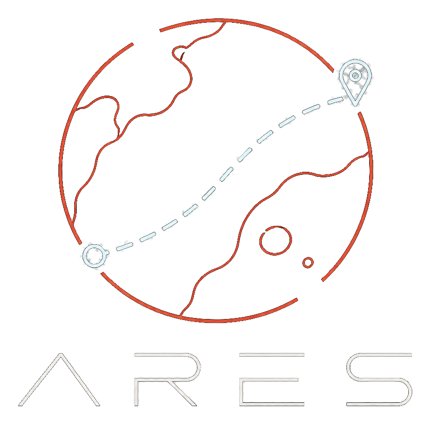

OPTICAL
Mars surface imagery provides landmark and outcrop context for the astronaut-scale traverse.

Hyperlocal Mars navigation for astronauts — real planetary data, route planning, science context, and EVA execution in one operational view.
Navigate from Jezero Base to a real Perseverance sampling site in the western delta, assess terrain, confirm the target visually, collect a representative sample, and return.
Perseverance sampled Wildcat Ridge within Jezero’s ancient delta. NASA identifies these sedimentary rocks as among the best places in Jezero to investigate ancient habitable environments and potential signs of past microbial life.
Mars surface imagery provides landmark and outcrop context for the astronaut-scale traverse.
USGS CTX terrain models provide elevation data for route slope and mobility analysis.
Delta sediment context helps prioritize destinations with high scientific value.